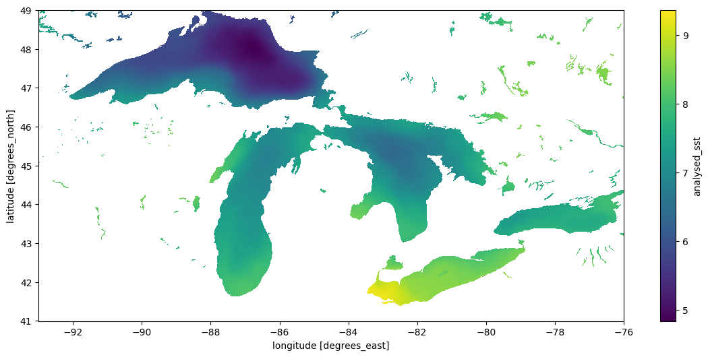
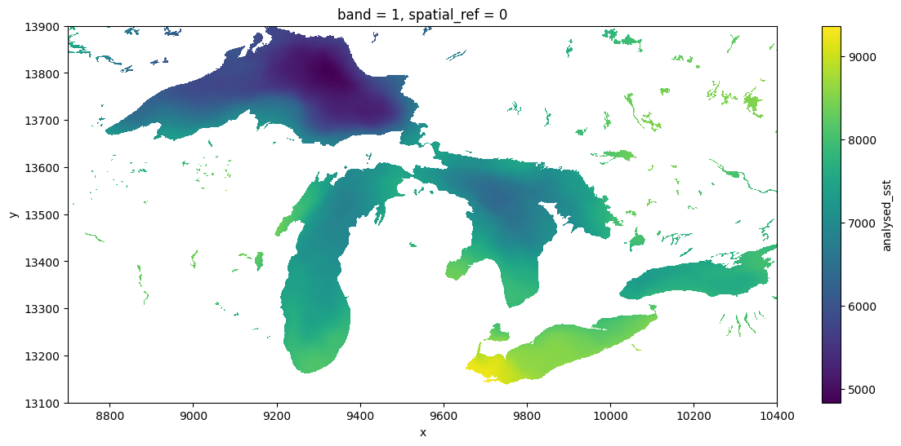

import earthaccess
import rioxarray
import rasterio
import xarray as xr
import numpy as npCloud-native EarthData Access
We show how to run existing NASA data workflows on the cloud, in parallel, without a cloud service account using your laptop.
NASA recently announced completion of the transfer of some 59 petabytes of data to the Amazon cloud – a core component of NASA’s Transformation to Open Science (TOPS) mission. Researchers are frequently told that to take advantage of such “cloud data” they will need to pay (or find a grant or other program to pay) for cloud computing resources. This approach is sometimes describes as “send the compute to the data”. While this narrative is no doubt beneficial to Amazon Inc, it exacerbates inequity and is often misleading. The purpose of having data in a cloud storage platform is not just to make it faster to access that data on rented cloud computing platforms. The high bandwith and high disk speeds provided by these systems can be just as powerful when you provide your own compute. Consistent with NASA’s vision, this means that high-performance access is free
NASA Earth science data have been freely openly and available to all users since EOSDIS became operational in 1994. Under NASA’s full and open data policy, all NASA mission data (along with the algorithms, metadata, and documentation associated with these data) must be freely available to the public. This means that anyone, anywhere in the world, can access the more than 59 PB of NASA Earth science data without restriction
All we need is software that can treat the cloud storage as if it were local storage: a virtual filesystem. The ability to do this – the HTTP range request standard – has been around for over two decades and is widely implemented in open source software. Unfortunately, many users and workflows are stuck in an old model that assumes individual files must always be downloaded first. We even see this in workflows designed to run on cloud platforms. A recent blog post by commercial platform Coiled provides a typical illustration of this. Typical of most workflows, the example relies on only a small subset of the data found in each file (specific spatial region and specific variables), but uses an approach that downloads all 500+ GB of files anyway. A faster approach will only download the range of data that we actually use. The Coiled blog post shows a full download-based workflow that takes 6.4hrs to complete locally, and then argues that by adding some extra code and paying Amazon for compute time, the same workflow can run much faster. Here we will consider the same workflow again, but this time make it much faster just by removing the download loop and running it from a local machine for free. We also compare a second way that dispatches via a different virtual filesystem approach and is even faster.
USER NOTE: This example processes daily data files over 2 years – 729 netcdf files in all. To make this example run more quickly for testing purposes, merely shorten the temporal span of data requested here!
results = earthaccess.search_data(
short_name="MUR-JPL-L4-GLOB-v4.1",
temporal=("2020-01-01", "2021-12-31"),
)Granules found: 729Using fsspec virtual filesystem via earthacess
Rather than tediously downloading the entirety of each file and then manually looping over each one to open, read, and concatinate as shown in the Coiled Demo, we can simply open the whole set in one go. This lazy read method allows us to then range-request only the subset of data we need from each file, thanks to earthaccess using a cloud-native reads over http via the python fsspec package. We can then issue the usual xarray operations to process and plot the data, treating the remote source as if it were already sitting on our local disk. This approach is quite fast, works from any machine, and does not require spending money on AWS. (note that fsspec package, which is doing the core magic of allowing us to treat the remote filesystem as if it were a local filesystem, is not explicitly visible in this workflow, but earthaccess has taken care of it for us).
Note this code is also simpler and more concise than the implementation shown in download-based workflow. Setting up the fsspec connections takes about 29 minutes. because the evaluation is lazy, most of the computation only occurs at the last step, when we create the plot, which takes about 46 minutes.
%%time
files = earthaccess.open(results)
ds = xr.open_mfdataset(files,
decode_times=False,
data_vars=['analysed_sst', 'sea_ice_fraction'],
concat_dim="time",
combine="nested",
parallel=True)Opening 729 granules, approx size: 505.34 GB
CPU times: user 2min 12s, sys: 35.9 s, total: 2min 48s
Wall time: 29min 35s%%time
dds = ds.sel(lon=slice(-93, -76), lat=slice(41, 49))
cond = (dds.sea_ice_fraction < 0.15) | np.isnan(dds.sea_ice_fraction)
result = dds.analysed_sst.where(cond)CPU times: user 21.3 ms, sys: 0 ns, total: 21.3 ms
Wall time: 19.4 ms%%time
result.std("time").plot(figsize=(14, 6), x="lon", y="lat")/home/jovyan/.virtualenvs/spatial/lib/python3.10/site-packages/dask/array/numpy_compat.py:51: RuntimeWarning: invalid value encountered in divide
x = np.divide(x1, x2, out)CPU times: user 3min 51s, sys: 1min 28s, total: 5min 19s
Wall time: 46min 19s<matplotlib.collections.QuadMesh at 0x7f4dfd91b370>
Using GDAL Virtual Filesystem
A different virtual filesystem approach is available through GDAL. While fsspec tries to provide a generic POSIX-like interface to remote files, the GDAL VSI is specifically optimized for spatial data and often considerably faster. The rioxarray package provides a drop-in engine to xarray’s open_mfdataset that uses GDAL. (Aside – at least some of the other netcdf engines supported by xarray should also be able to natively perform range requests over URLs to data without needing the fsspec layer added by earthaccess, and may have better performance. This case is not illustrated in this notebook). Here we’ll use the GDAL VSI.
Because the NASA EarthData are behind a security layer, using the URLs directly instead of earthaccess with fsspec requires a little extra handling of authentication process to make GDAL aware of the NETRC and cookie files it needs. We’ll also set some of the optional but recommended options for GDAL when using the virtual filesystem. Unfortunately this makes our code look a bit verbose – ideally packages like rioxarray would take care of these things.
Note the GDAL is about 3x faster at setting up the virtual filesystem, and a little faster in the xarray/dask dispatch to compute the plot. (When this approach is combined with metadata from a STAC catalog, it does not need to read individual file metadata and the first step can become almost instant). GDAL performance is constantly improving, especially with regards to cloud native reads, so a recent version can make a huge difference.
rasterio.show_versions()rasterio info:
rasterio: 1.3.9
GDAL: 3.6.4
PROJ: 9.0.1
GEOS: 3.11.1
PROJ DATA: /opt/venv/lib/python3.10/site-packages/rasterio/proj_data
GDAL DATA: /opt/venv/lib/python3.10/site-packages/rasterio/gdal_data
System:
python: 3.10.12 (main, Nov 20 2023, 15:14:05) [GCC 11.4.0]
executable: /opt/venv/bin/python
machine: Linux-6.6.10-76060610-generic-x86_64-with-glibc2.35
Python deps:
affine: 2.4.0
attrs: 23.2.0
certifi: 2024.02.02
click: 8.1.7
cligj: 0.7.2
cython: None
numpy: 1.26.3
snuggs: 1.4.7
click-plugins: None
setuptools: 59.6.0%%time
import warnings
warnings.filterwarnings('ignore')
import os
from pathlib import Path
cookies = os.path.expanduser("~/.urs_cookies")
Path(cookies).touch()
## pull out the URLs
data_links = [granule.data_links(access="external") for granule in results]
url_links = [f'{link[0]}' for link in data_links]
# and here we go
with rasterio.Env(GDAL_INGESTED_BYTES_AT_OPEN="32000",
GDAL_HTTP_MULTIPLEX="YES",
GDAL_HTTP_MERGE_CONSECUTIVE_RANGES="YES",
GDAL_HTTP_VERSION="2",
GDAL_NUM_THREADS="ALL_CPUS",
GDAL_DISABLE_READDIR_ON_OPEN="EMPTY_DIR",
GDAL_HTTP_COOKIEFILE=cookies,
GDAL_HTTP_COOKIEJAR=cookies,
GDAL_HTTP_NETRC=True):
ds1 = xr.open_mfdataset(url_links,
engine = "rasterio",
concat_dim="time",
combine="nested",
)CPU times: user 47.7 s, sys: 3.78 s, total: 51.4 s
Wall time: 11min 48s%%time
dds = ds1.sel(x=slice(18000-9300, 18000-7600), y = slice(9000+4100,9000+4900))
dds.analysed_sst.std("time").plot(figsize=(14, 6), x="x", y="y")CPU times: user 2min 13s, sys: 3min 13s, total: 5min 27s
Wall time: 32min 55s<matplotlib.collections.QuadMesh at 0x7f4cf8396b30>
Comparisons
The GDAL VSI is already widely used under the hood by python packages working with cloud-optimized geotiff (COG) files (e.g. via odc.stac, which like the above approach also produces dask-backed xarrays), and also widely used by most other languages (e.g. R) for working with any spatial data. To GDAL, netcdf and other so-called “n-dimensional array” formats like h5, zarr are just a handful of the 160-odd formats of “raster” data it supports, along with formats like COG and GeoTIFF files. It can be particularly powerful in more complicated workflows which require spatially-aware operations such as reprojection and aggregation. The GDAL VSI can sometimes be considerably faster than fsspec, expecially when configured for cloud-native access. The nusiance of these environmental variables aside, it can also be considerably easier to use and to generalize patterns across data formats (netcdf, zarr, COG), and across languages (R, C++, javascript, julia etc), since GDAL understands [all these formats] and is used in all of these languages, as well as in platforms such as Google Earth Engine and QGIS. This makes it a natural bridge between languages. This broad use over decades has made GDAL very powerful, and it continues to improve rapidly with frequent releases.
GDAL is not just for COGs. The python ecosystem has a rich set of patterns for range-request reads of Cloud Optimized Geotif (COG) files using packages like odc.stac, as illustrated in our intro to cloud-native python. But possibly for historical/cultural reasons, at present the python geospatial community seems to prefer to access ncdf and similar n-dimensional-array formats without GDAL, whether by relying on downloading complete files, using fsspec, or other dedicated libraries (zarr). There are possibly many reasons for this. One is a divide between the the “Geospatial Information Systems” community, that thinks of file serializations as “rasters” or “vectors”, and the “modeler” community, which thinks of data as “n-dimensional arrays”. Both have their weaknesses and the lines are frequently blurred, but one obvious manifestation is in how each one writes their netcdf files (and how much they rely on GDAL). For instance, this NASA product, strongly centered in the modeler community is sometimes sloppy about these metadata conventions, and as a result GDAL (especially older versions), might not detect all the details appropriately. Note that GDAL has failed to recognize the units of lat-long, so we have had to subset the x-y positions manually.